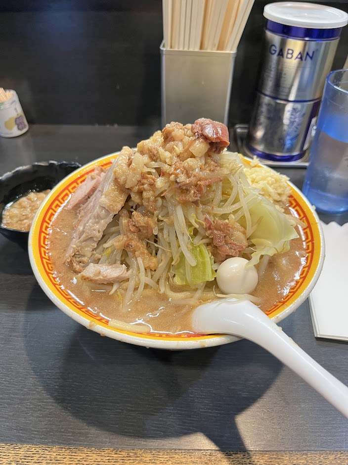

Edomondo - Jiro-style Ramen

- Price: ¥950
- Rating: 7.5/10
- Last date I had it : 2024-12-21
- Review: (for the price, you can get small/med/large portion of noods for and i accidentally got a large which now I’m in a food coma) the broth is a bit salty but b/c you can get a buttload of toppings for free (bean sprouts, cabbage, raw garlic), it easily cuts thru w/ the thick noodles. theres a quail egg and a really tender chashu. the amount adds up to probs like 2000 calories or smth but flavorwise its really heavy. its a nice little shop tho, tons of retro video game motifs. i was eating while listening to final fantasy music and looking at ryu and slime on a sign.